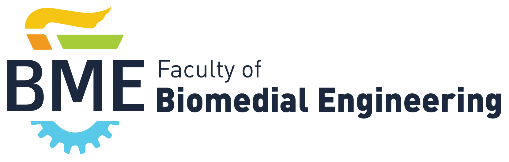

<!-- Footer -->
<div id="footer">
    {% if site.github.is_project_page %}
    <span class="site-footer-owner">
      <a href="{{ site.github.repository_url }}">{{ site.github.repository_name }}</a> is maintained by <a href="{{ site.github.owner_url }}">{{ site.github.owner_name }}</a>.
    </span> {% endif %}
    <span class="site-footer-credits">
      
        
        
    </span>
</div>